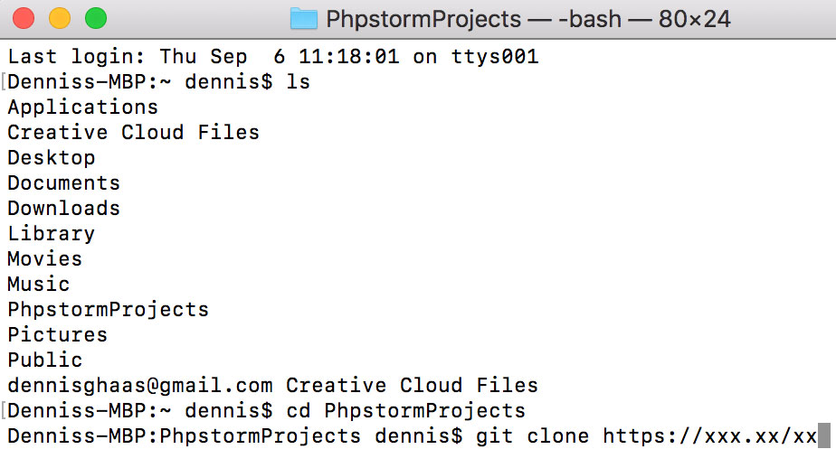
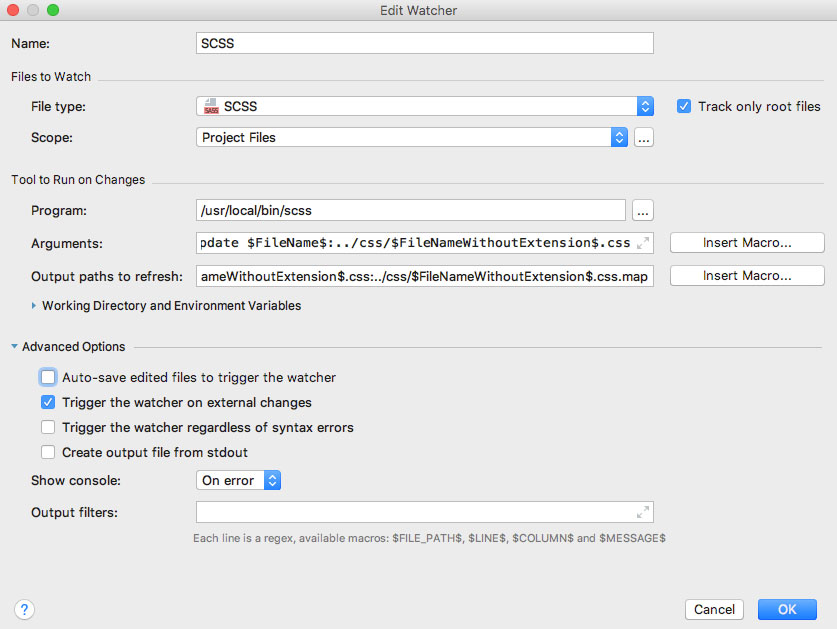
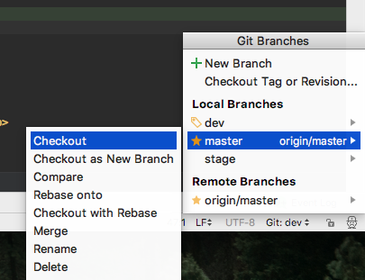
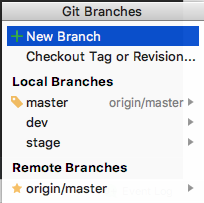
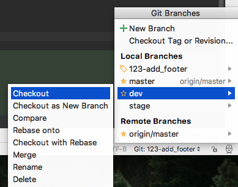
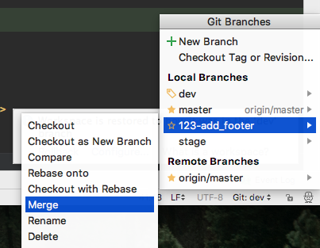

PhpStorm Dokumentation
Downloading Git:
Bevor mit Git gestartet werden kann, muss auf dem Rechner erst Git installiert werden:
Authentifizierung bei Github mittels eines SSH-Schlüsselpaares
- Überprüfen, ob schon ein Schlüsselpaar auf dem Rechner existiert:
- Link
- Falls keines existiert oder du die vorhandenen nicht benutzen möchtest, musst du ein neues erstellen
- Link
Einstellung in PHPStorm:
In den Einstellung(cmd+,) kann man unter Version Control → Git u.a. den Pfad zum Git-Programm angeben.
Am Projekt arbeiten:
Via Git Clone gewünschtes Repository herunterladen. Bdt. Terminal öffnen und Repository im gewünschten Ordner abspeichern. In PHPStorm genau dieses Repository öffnen. ( Eine von vielen Möglichkeiten ein Git-Projekt zu öffnen )
Git Oberfläche erklärt:
Git Branches:
Unten rechts am Ende des Bildrands, neben der Formatierung (z.B. UTF-8), ist Git:(Master) zu sehen. Bei Click auf jenes, öffnet sich ein Fenster. In dieser Ansicht können ältere Branches geladen werden oder neue erstellt werden. Hauptbranches sind (Dev),(Stage) und Master.
Version Control:
Über die Version Control (cmd+9), anschließend “Log”, können vergangene Push Vorgänge nachgesehen und nachvollzogen werden. Bei Auswahl eines Pushes erscheint auf der rechten Seite die Datei/en, die sich beim Push verändert haben. Bei Doppelclick auf diese, öffnet sich ein Fenster. Auf der linken Seite zu sehen, Datei vor dem Push. Auf der rechten Seite, Datei nach dem Push. Beim Reiter „Local Changes“ können lokale Änderungen angesehen und nachvollzogen werden.
SCSS Komprimierung
Damit die Komprimierung überhaupt funktioniert, muss Sass
installiert werden.
Überprüfen ob Sass installiert ist: sass -v
Wenn es nicht installiert ist oder Fehler auswirft, folgende Schritte befolgen:
1- sudo gem install rails ( Install Rails )
2- sudo gem install sass ( Install Sass )
Wenn offen – schließe PHPStorm und öffne es erneut. Zum überprüfen, ob Sass installiert wurde, den Terminal Befehl: sass -verneut benutzen.
Komprimierung zu PHP Storm Projekt hinzufügen:
Pfad: Preferences(cmd+,) → Tools → File Watchers
Über das „+“ Icon das SCSS Template hinzufügen. Das ganze wird über die Erweiterung File Watcher (Standardmäßig in PHP Storm integriert) gesteuert.
„Track only root files“ → Falls der Haken aus ist, unbedingt einschalten. Falls dieser aus ist, wir von jeder .scss Datei eine .css Datei erstellt. Das wäre obsolet, da die main.css schon alle Informationen der Stylesheets beinhaltet.
Arguments:
Output paths to refresh:
Bei Advanced Option „Auto-save[...]“ ausstellen.
Wichtige Plugins für PhpStorm
- 1. typoscript (für Dateiendungen → .typoscript)
- 2. .ignore → für z.B. Dateien wie .gitignore
Nice to have
- 1. Keypromoter X → Zeigt bei Click mit der Maus den Shortcut für die Option an.
- 2. String Manipulation → Mehrere Optionen Texte zu formatieren. Beispiel
- CodeGlance → Zeigt wie in SublimeText die gesamte Struktur des Codes der Datei.
Git Dokumentation
Bevor wir anfangen
Git ist eine Versionsverwaltungssoftware, mit der wir unsere Entwicklungsarbeit archivieren, kommentieren und kooperativ gestalten. Sie wird auf jedem Rechner installiert. Durch Git hast du die Möglichkeit, dir Änderungen an deinem Code anzeigen zu lassen und diese als "Zwischenstand" zu speichern, um sie mit anderen Entwicklern in einem zentralen Repository zusammenzuführen.
Git installieren
Downloading Git:
Bevor mit Git gestartet werden kann, muss auf dem Rechner erst Git installiert werden:
Authentifizierung bei Github mittels eines SSH-Schlüsselpaares
Alle Git Befehle die in PHP Storm verfügbar sind, können auch direkt über die Konsole ausgeführt werden. (Git Bash bei Windows / Terminal beim Mac) ( Alle Terminal Befehle anzeigen )
1. Projektarchiv anlegen
git init - Ein Ordner namens .git wird in dem aktuellen Verzeichnis erstellt. Darin speichert Git alle nötigen Daten über das Projekt (z. B. URL des zentralen Repositories, deine lokalen Änderungen, aktuelle Branches). Alle Änderungen, die du machst, passieren erst einmal nur lokal auf deinem Rechner.
2. Einem bestehen Projekt beitreten
git clone repository-URL - Mit diesem Befehl lädst du den aktuellen Stand auf deinen Rechner herunter. Dafür wird ein neuer Ordner im aktuellen Verzeichnis angelegt. (Es macht also Sinn, sich dabei in seinem Projekteordner zu befinden.) Im Repository ist nach dem Klonen automatisch der Master-Branch aktiv.
Git workflow
3. Arbeit an einem Ticket beginnen
3.1. in den Master Branch wechseln (standardmäßig eingestellt)
3.2. den aktuellen Stand herunterladen

3.3. einen neuen Branch mit einer eindeutigen ID anlegen
(Muster: Ticketnummer,Bindestrich, englische Beschreibung mit Unterstrichen. Beispiel = 123-add_footer)
4. Den Code verändern/ Dateien hochladen/löschen
4.1. Bei aufwändigeren Tickets zwischenzeitlich Ticket committen.

(Damit die Entwickler danach den Workflow nachvollziehen können)
Zs. Bei einfügen von neuen Dateien z.B. Bildern, fragt PHP Storm automatisch nach ob die neue Datei dem Ticketbranch hinzugefügt werden soll. In d. R. Sollte hier auf „Ok“ geclickt werden.
Farbschema: datei.scss bdt. dem Ticketbranch bzw. Repository noch nicht hinzugefügt. | datei.scss bdt. dem Ticketbranch hinzufügt. (Siehe letzter Absatz) | datei.scss existiert im Git Repository
5. Änderungen in das Entwicklungssystem laden (Dev) und testen.
5.1 dev Branch auschecken und bearbeitetes Ticket mergen
6. Wenn Test erfolgreich – neue Daten dem Git System hinzufügen.
6.1 Mit commit and push haben von nun auch andere Entwickler zugriff auf die Änderungen.
7. Stage System auschecken und Projekt updaten
7.1. Ticketbranch in den Stage Branch mergen
7.2. Stage Branch pushen
7.3. Änderungen auf Stage System hochladen
7.4. AM/PL Ticket zuweisen und auf Freigabe für Livesystem warten.
Falls der Projektleiter/in noch Fehler entdecken sollte, den Ticketbranch auschecken und Schritte von 4.-7.4 wiederholen.
8. In den Master wechseln
8.1. Den aktuellen Stand des Master herunterladen
8.2. Änderungen des Ticketbranches in den Master überführen
8.3. Master pushen
8.4. Dateien aus dem Master Branch auf das Livesystem hochladen.
8.5. Ticket dem AM/PL zuweisen
9. Wenn Änderungen Live sind und das Ticket geschlossen, so kann der Ticketbranch gelöscht werden.
Anmerkung:
Wenn das System noch in der Entwicklung ist und es noch kein Livesystem besitzt, so sind die Schritte 8.-8.3. dennoch zu erledigen.